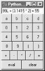
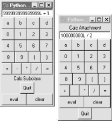
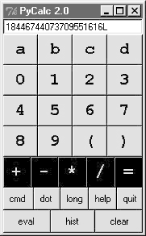
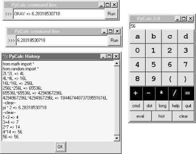
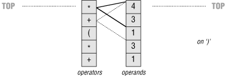
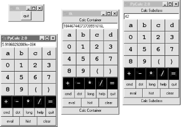
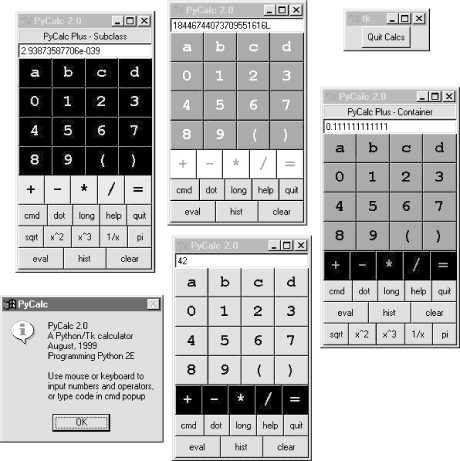

| I l@ve RuBoard |
|
18.7 PyCalc: A Calculator Program/ObjectTo wrap up this chapter, I'm going to show you a practical application for some of the parsing technology introduced in the previous section. This section presents PyCalc -- a Python calculator program with a graphical interface similar to the calculator programs available on most window systems. But like most of the GUI examples in this book, PyCalc offers a few advantages over existing calculators. Because PyCalc is written in Python, it is both easily customized and widely portable across window platforms. And because it is implemented with classes, it is both a standalone program and a reusable object library. 18.7.1 A Simple Calculator GUIBefore I show you how to write a full-blown calculator, though, the module shown in Example 18-13 starts this discussion in simpler terms. It implements a limited calculator GUI, whose buttons just add text to the input field at the top, to compose a Python expression string. Fetching and running the string all at once produces results. Figure 18-8 shows the window this module makes when run as a top-level script. Figure 18-8. The calc0 script in action on Windows (result=160.283)Example 18-13. PP2E\Lang\Calculator\calc0.py#!/usr/local/bin/python
# a simple calculator GUI: expressions run all at once with eval/exec
from Tkinter import *
from PP2E.Dbase.TableBrowser.guitools import frame, button, entry
class CalcGui(Frame):
def __init__(self, parent=None): # an extended frame
Frame.__init__(self, parent) # on default top-level
self.pack(expand=YES, fill=BOTH) # all parts expandable
self.master.title('Python Calculator 0.1') # 6 frames plus entry
self.master.iconname("pcalc1")
self.names = {} # namespace for variables
text = StringVar( )
entry(self, TOP, text)
rows = ["abcd", "0123", "4567", "89( )"]
for row in rows:
frm = frame(self, TOP)
for char in row: button(frm, LEFT, char,
lambda x=text, y=char: x.set(x.get( ) + y))
frm = frame(self, TOP)
for char in "+-*/=": button(frm, LEFT, char,
lambda x=text, y=char: x.set(x.get( )+' '+y+' '))
frm = frame(self, BOTTOM)
button(frm, LEFT, 'eval', lambda x=self, y=text: x.eval(y) )
button(frm, LEFT, 'clear', lambda x=text: x.set('') )
def eval(self, text):
try:
text.set(`eval(text.get( ), self.names, self.names)`)
except SyntaxError:
try:
exec(text.get( ), self.names, self.names)
except:
text.set("ERROR") # bad as statement too?
else:
text.set('') # worked as a statement
except:
text.set("ERROR") # other eval expression errors
if __name__ == '__main__': CalcGui().mainloop( )
18.7.1.1 Building the GUINow, this is about as simple as a calculator can be, but it demonstrates the basics. This window comes up with buttons for entry of numbers, variable names, and operators. It is built by attaching buttons to frames: each row of buttons is a nested Frame, and the GUI itself is a Frame subclass, with an attached Entry and six embedded row frames (grids would work here, too). The calculator's frame, entry field, and buttons are made expandable in the imported guitools utility module. This calculator builds up a string to pass to the Python interpreter all at once on "eval" button presses. Because you can type any Python expression or statement in the entry field, the buttons are really just a convenience. In fact, the entry field isn't much more than a command line. Try typing import sys and then dir(sys) to display sys module attributes in the input field at the top -- it's not what you normally do with a calculator, but demonstrative nevertheless.[3]
In CalcGui's constructor, buttons are coded as lists of strings; each string represents a row and each character in the string represents a button. Lambdas with default argument values are used to set callback data for each button. The callback functions save the button's character and the linked text entry variable, so that the character can be added to the end of the entry widget's current string on a press. 18.7.1.2 Running code stringsThis module implements a GUI calculator in 45 lines of code (counting comments and blank lines). But to be honest, it cheats: expression evaluation is delegated to Python. In fact, the built-in eval and exec tools do most of the work here:
Both accept optional dictionaries to be used as global and local namespaces for assigning and evaluating names used in the code strings. In the calculator, self.names becomes a symbol table for running calculator expressions. A related Python function, compile, can be used to precompile code strings before passing them to eval and exec (use it if you need to run the same string many times). By default a code string's namespace defaults to the caller's namespaces. If we didn't pass in dictionaries here, the strings would run in the eval method's namespace. Since the method's local namespace goes away after the method call returns, there would be no way to retain names assigned in the string. Notice the use of nested exception handlers in the eval method:
Statements and invalid expressions might be parsed twice, but the overhead doesn't matter here, and you can't tell if a string is an expression or a statement without parsing it manually. Note that the "eval" button evaluates expressions, but = sets Python variables by running an assignment statement. Variable names are combinations of letter keys abcd (or any name typed directly). They are assigned and evaluated in a dictionary used to represent the calculator's namespace. 18.7.1.3 Extending and attachingClients that reuse this calculator are as simple as the calculator itself. Like most class-based Tkinter GUIs, this one can be extended in subclasses -- Example 18-14 customizes the simple calculator's constructor to add extra widgets. Example 18-14. PP2E\Lang\Calculator\calc0ext.pyfrom Tkinter import *
from calc0 import CalcGui
class Inner(CalcGui): # extend gui
def __init__(self):
CalcGui.__init__(self)
Label(self, text='Calc Subclass').pack( ) # add after
Button(self, text='Quit', command=self.quit).pack( ) # top implied
Inner().mainloop( )
It can also be embedded in a container class -- Example 18-15 attaches the simple calculator's widget package, and extras, to a common parent. Example 18-15. PP2E\Lang\Calculator\calc0emb.pyfrom Tkinter import *
from calc0 import CalcGui # add parent, no master calls
class Outer:
def __init__(self, parent): # embed gui
Label(parent, text='Calc Attachment').pack( ) # side=top
CalcGui(parent) # add calc frame
Button(parent, text='Quit', command=parent.quit).pack( )
root = Tk( )
Outer(root)
root.mainloop( )
Figure 18-9 shows the result of running both of these scripts from different command lines. Both have a distinct input field at the top. This works; but to see a more practical application of such reuse techniques, we need to make the underlying calculator more practical, too. Figure 18-9. The calc0 script's object attached and extended18.7.2 Pycalc -- A Real Calculator GUIOf course, real calculators don't usually work by building up expression strings and evaluating them all at once; that approach is really little more than a glorified Python command line. Traditionally, expressions are evaluated in piecemeal fashion as they are entered, and temporary results are displayed as soon as they are computed. Implementing this behavior is a bit more work: expressions must be evaluated manually instead of calling the eval function only once. But the end result is much more useful and intuitive.
This section presents the implementation of PyCalc -- a Python/Tkinter program that implements such a traditional calculator GUI. Although its evaluation logic is more complex than the simpler calculator above, it demonstrates advanced programming techniques and serves as an interesting finale for this chapter. 18.7.2.1 Running PyCalcAs usual, let's look at the GUI before the code. You can run PyCalc from the PyGadgets and PyDemos launcher bars at the top of the examples tree, or by directly running file calculator.py listed below (e.g., click it in a file explorer). Figure 18-10 shows PyCalc's main window. By default, it shows operand buttons in black-on-blue (and opposite for operator buttons), but font and color options can be passed in to the GUI class's constructor method. Of course, that means gray-on-gray in this book, so you'll have to run PyCalc yourself to see what I mean. Figure 18-10. PyCalc calculator at work on WindowsIf you do run this, you'll notice that PyCalc implements a normal calculator model -- expressions are evaluated as entered, not all at once at the end. That is, parts of an expression are computed and displayed as soon as operator precedence and manually typed parentheses allow. I'll explain how this evaluation works in a moment. PyCalc's CalcGui class builds the GUI interface as frames of buttons much like the simple calculator of the previous section, but PyCalc adds a host of new features. Among them are another row of action buttons, inherited methods from GuiMixin (presented in Chapter 9), a new "cmd" button that pops up nonmodal dialogs for entry of arbitrary Python code, and a recent calculations history pop-up. Figure 18-11 captures some of PyCalc's pop-up windows. Figure 18-11. PyCalc calculator with some of its pop-upsYou may enter expressions in PyCalc by clicking buttons in the GUI, typing full expressions in command-line pop-ups, or typing keys on your keyboard. PyCalc intercepts key press events and interprets them the same as corresponding button presses; typing + is like pressing button +, the space bar key is "clear", Enter is "eval", backspace erases a character, and ? is like pressing "help". The command-line pop-up windows are nonmodal (you can pop up as many as you like). They accept any Python code -- press the Run button or your Enter key to evaluate text in the input field. The result of evaluating this code in the calculator's namespace dictionary is thrown up in the main window, for use in larger expressions. You can use this as an escape mechanism to employ external tools in your calculations. For instance, you can import and use functions coded in Python or C within these pop-ups. The current value in the main calculator window is stored in newly opened command-line pop-ups, too, for use in typed expressions. PyCalc supports long integers (unlimited precision), negatives, and floating-point numbers, just because Python does: individual operands and expressions are still evaluated with the eval built-in, which calls the Python parser/interpreter at run-time. Variable names can be assigned and referenced in the main window with the letter, =, and "eval" keys; they are assigned in the calculator's namespace dictionary (more complex variable names may be typed in command-line pop-ups). Note the use of pi in the history window: PyCalc preimports names in the math and random modules into the namespace where expressions are evaluated. 18.7.2.2 Evaluating expressions with stacksNow that you have the general idea of what PyCalc does, I need to say a little bit about how it does what it does. Most of the changes in this version involve managing the expression display and evaluating expressions. PyCalc is structured as two classes:
As you can see from this, the magic of expression evaluation boils down to juggling the operator and operand stacks. While scanning expression strings from left to right as they are entered, operands are pushed along the way, but operators delimit operands and may trigger temporary results before they are pushed. Here's the general scenario:
In the end, the last value on the operands stack is displayed in the calculator's entry field, ready for use in another operation. This evaluation algorithm is probably best described by working through examples. Let's step through the entry of a few expressions and watch the evaluation stacks grow. PyCalc stack tracing is enabled with the debugme flag in the module; if true, the operator and operand stacks are displayed on stdout each time the Evaluator class is about to apply an operator and reduce (pop) the stacks. A tuple holding the stack lists (operators, operands) is printed on each stack reduction; tops of stack are at the ends of the lists. For instance, here is the console output after typing and evaluating a simple string: 1) Entered keys: "5 * 3 + 4 <eval>" [result = 19] (['*'], ['5', '3']) [on '+' press: displays "15"] (['+'], ['15', '4']) [on 'eval' press: displays "19"] Note that the pending (stacked) * subexpression is evaluated when the + is pressed: * operators bind tighter than +, so the code is evaluated immediately before the + operator is pushed. When the + button is pressed, the entry field contains 3. In general, the entry field always holds the prior operand when an operator button is pressed. Since the text entry's value is pushed onto the operands stack before the operator is applied, we have to pop results before displaying them after "eval" or ) is pressed (otherwise the results are pushed onto the stack twice): 2) "5 + 3 * 4 <eval>" [result = 17] (['+', '*'], ['5', '3', '4']) [on 'eval' press] (['+'], ['5', '12']) [displays "17"] Here, the pending + isn't evaluated when the * button is pressed: since * binds tighter, we need to postpone the + until the * can be evaluated. The * operator isn't popped until its right operand has been seen. On the "eval" press there are two operators to pop and apply to operand stack entries: 3) "5 + 3 + 4 <eval>" [result = 12] (['+'], ['5', '3']) [on the second '+'] (['+'], ['8', '4']) [on 'eval'] For strings of same-precedence operators like this one, we pop and evaluate immediately as we scan left to right, instead of postponing evaluation. This results in a left-associative evaluation, in the absence of parentheses: 5+3+4 is evaluated as ((5+3)+4). Order doesn't matter for + and * operations: 4) "1 + 3 * ( 1 + 3 * 4 ) <eval>" [result = 40]
(['+', '*', '(', '+', '*'], ['1', '3', '1', '3', '4']) [on ')']
(['+', '*', '(', '+'], ['1', '3', '1', '12']) [displays "13"]
(['+', '*'], ['1', '3', '13']) [on 'eval']
(['+'], ['1', '39'])
In this case, all the operators and operands are stacked (postponed) until we press the ) button at the end. When the ) button is pressed, the parenthesized subexpression is popped and evaluated, and 13 is displayed in the entry field. On pressing "eval", the rest is evaluated, and the final result (40) is shown. The result is the left operand of another operator. In fact, any temporary result can be used again: if we keep pressing an operator button without typing new operands, it's reapplied to the result of the prior press. Figure 18-12 shows how the two stacks look at their highest level while scanning the expression in the preceding example trace. The top operator is applied to the top two operands and the result is pushed back for the operator below: 5) "1 + 3 * ( 1 + 3 * 4 <eval>" [result = *ERROR*]
(['+', '*', '(', '+', '*'], ['1', '3', '1', '3', '4']) [on eval]
(['+', '*', '(', '+'], ['1', '3', '1', '12'])
(['+', '*', '('], ['1', '3', '13'])
(['+', '*'], ['1', '*ERROR*'])
(['+'], ['*ERROR*'])
(['+'], ['*ERROR*', '*ERROR*'])
Figure 18-12. Evaluation stacks: 1 + 3 * (1 + 3 * 4)This string triggers an error. PyCalc is casual about error handling. Many errors are made impossible by the algorithm itself, but things like unmatched parentheses still trip up the evaluator. But instead of trying to detect all possible error cases explicitly, a general try statement in the reduce method is used to catch them all: expression errors, undefined name errors, syntax errors, etc. Operands and temporary results are always stacked as strings, and each operator are applied by calling eval. When an error occurs inside an expression, a result operand of *ERROR* is pushed, which makes all remaining operators fail in eval, too. *ERROR* percolates to the top of the expression. At the end, it's the last operand and is displayed in the text entry field to alert you of the mistake. 18.7.2.3 PyCalc source codeExample 18-16 contains the PyCalc source module that puts these ideas to work in the context of a GUI. It's a single-file implementation (not counting utilities imported and reused). Study the source for more details; and as usual, there's no substitute for interacting with the program on your own to get a better feel for its functionality. Example 18-16. PP2E\Lang\Calculator\calculator.py#!/usr/local/bin/python
#########################################################################
# PyCalc 2.0: a Python/Tkinter calculator program and GUI component.
# evaluates expressions as they are entered, catches keyboard keys
# for expression entry; adds integrated command-line popups, recent
# calculations history display popup, fonts and colors configuration,
# help and about popups, preimported math/random constants, and more;
#########################################################################
from Tkinter import * # widgets, consts
from PP2E.Gui.Tools.guimixin import GuiMixin # quit method
from PP2E.Dbase.TableBrowser.guitools import * # widget builders
Fg, Bg, Font = 'black', 'skyblue', ('courier', 16, 'bold') # default config
debugme = 1
def trace(*args):
if debugme: print args
###########################################
# the main class - handles user interface;
# an extended Frame, on new Toplevel, or
# embedded in another container widget
###########################################
class CalcGui(GuiMixin, Frame):
Operators = "+-*/=" # button lists
Operands = ["abcd", "0123", "4567", "89( )"] # customizable
def __init__(self, parent=None, fg=Fg, bg=Bg, font=Font):
Frame.__init__(self, parent)
self.pack(expand=YES, fill=BOTH) # all parts expandable
self.eval = Evaluator( ) # embed a stack handler
self.text = StringVar( ) # make a linked variable
self.text.set("0")
self.erase = 1 # clear "0" text next
self.makeWidgets(fg, bg, font) # build the gui itself
if not parent or not isinstance(parent, Frame):
self.master.title('PyCalc 2.0') # title iff owns window
self.master.iconname("PyCalc") # ditto for key bindings
self.master.bind('<KeyPress>', self.onKeyboard)
self.entry.config(state='disabled')
else:
self.entry.config(state='normal')
self.entry.focus( )
def makeWidgets(self, fg, bg, font): # 7 frames plus text-entry
self.entry = entry(self, TOP, self.text) # font, color configurable
for row in self.Operands:
frm = frame(self, TOP)
for char in row:
button(frm, LEFT, char,
lambda x=self, y=char: x.onOperand(y),
fg=fg, bg=bg, font=font)
frm = frame(self, TOP)
for char in self.Operators:
button(frm, LEFT, char,
lambda x=self, y=char: x.onOperator(y),
fg=bg, bg=fg, font=font)
frm = frame(self, TOP)
button(frm, LEFT, 'cmd ', self.onMakeCmdline)
button(frm, LEFT, 'dot ', lambda x=self: x.onOperand('.'))
button(frm, LEFT, 'long', lambda x=self: x.text.set(x.text.get( )+'L'))
button(frm, LEFT, 'help', self.help)
button(frm, LEFT, 'quit', self.quit) # from guimixin
frm = frame(self, BOTTOM)
button(frm, LEFT, 'eval ', self.onEval)
button(frm, LEFT, 'hist ', self.onHist)
button(frm, LEFT, 'clear', self.onClear)
def onClear(self):
self.eval.clear( )
self.text.set('0')
self.erase = 1
def onEval(self):
self.eval.shiftOpnd(self.text.get( )) # last or only opnd
self.eval.closeall( ) # apply all optrs left
self.text.set(self.eval.popOpnd( )) # need to pop: optr next?
self.erase = 1
def onOperand(self, char):
if char == '(':
self.eval.open( )
self.text.set('(') # clear text next
self.erase = 1
elif char == ')':
self.eval.shiftOpnd(self.text.get( )) # last or only nested opnd
self.eval.close( ) # pop here too: optr next?
self.text.set(self.eval.popOpnd( ))
self.erase = 1
else:
if self.erase:
self.text.set(char) # clears last value
else:
self.text.set(self.text.get( ) + char) # else append to opnd
self.erase = 0
def onOperator(self, char):
self.eval.shiftOpnd(self.text.get( )) # push opnd on left
self.eval.shiftOptr(char) # eval exprs to left?
self.text.set(self.eval.topOpnd( )) # push optr, show opnd|result
self.erase = 1 # erased on next opnd|'('
def onMakeCmdline(self):
new = Toplevel( ) # new top-level window
new.title('PyCalc command line') # arbitrary python code
frm = frame(new, TOP) # only the Entry expands
label(frm, LEFT, '>>>').pack(expand=NO)
var = StringVar( )
ent = entry(frm, LEFT, var, width=40)
onButton = (lambda s=self, v=var, e=ent: s.onCmdline(v,e))
onReturn = (lambda event, s=self, v=var, e=ent: s.onCmdline(v,e))
button(frm, RIGHT, 'Run', onButton).pack(expand=NO)
ent.bind('<Return>', onReturn)
var.set(self.text.get( ))
def onCmdline(self, var, ent): # eval cmdline popup input
try:
value = self.eval.runstring(var.get( ))
var.set('OKAY')
if value != None: # run in eval namespace dict
self.text.set(value) # expression or statement
self.erase = 1
var.set('OKAY => '+ value)
except: # result in calc field
var.set('ERROR') # status in popup field
ent.icursor(END) # insert point after text
ent.select_range(0, END) # select msg so next key deletes
def onKeyboard(self, event):
pressed = event.char # on keyboard press event
if pressed != '': # pretend button was pressed
if pressed in self.Operators:
self.onOperator(pressed)
else:
for row in self.Operands:
if pressed in row:
self.onOperand(pressed)
break
else:
if pressed == '.':
self.onOperand(pressed) # can start opnd
if pressed in 'Ll':
self.text.set(self.text.get( )+'L') # can't: no erase
elif pressed == '\r':
self.onEval( ) # enter key = eval
elif pressed == ' ':
self.onClear( ) # spacebar = clear
elif pressed == '\b':
self.text.set(self.text.get( )[:-1]) # backspace
elif pressed == '?':
self.help( )
def onHist(self):
# show recent calcs log popup
# self.infobox('PyCalc History', self.eval.getHist( ))
from ScrolledText import ScrolledText
new = Toplevel( ) # make new window
ok = Button(new, text="OK", command=new.destroy)
ok.pack(pady=1, side=BOTTOM) # pack first=clip last
text = ScrolledText(new, bg='beige') # add Text + scrollbar
text.insert('0.0', self.eval.getHist( )) # get Evaluator text
text.pack(expand=YES, fill=BOTH)
# new window goes away on ok press or enter key
new.title("PyCalc History")
new.bind("<Return>", (lambda event, new=new: new.destroy( )))
ok.focus_set( ) # make new window modal:
new.grab_set( ) # get keyboard focus, grab app
new.wait_window( ) # don't return till new.destroy
def help(self):
self.infobox('PyCalc', 'PyCalc 2.0\n'
'A Python/Tk calculator\n'
'August, 1999\n'
'Programming Python 2E\n\n'
'Use mouse or keyboard to\n'
'input numbers and operators,\n'
'or type code in cmd popup')
####################################
# the expression evaluator class
# embedded in and used by a CalcGui
# instance, to perform calculations
####################################
class Evaluator:
def __init__(self):
self.names = {} # a names-space for my vars
self.opnd, self.optr = [], [] # two empty stacks
self.hist = [] # my prev calcs history log
self.runstring("from math import *") # preimport math modules
self.runstring("from random import *") # into calc's namespace
def clear(self):
self.opnd, self.optr = [], [] # leave names intact
if len(self.hist) > 64: # don't let hist get too big
self.hist = ['clear']
else:
self.hist.append('--clear--')
def popOpnd(self):
value = self.opnd[-1] # pop/return top|last opnd
self.opnd[-1:] = [] # to display and shift next
return value
def topOpnd(self):
return self.opnd[-1] # top operand (end of list)
def open(self):
self.optr.append('(') # treat '(' like an operator
def close(self): # on ')' pop downto higest '('
self.shiftOptr(')') # ok if empty: stays empty
self.optr[-2:] = [] # pop, or added again by optr
def closeall(self):
while self.optr: # force rest on 'eval'
self.reduce( ) # last may be a var name
try:
self.opnd[0] = self.runstring(self.opnd[0])
except:
self.opnd[0] = '*ERROR*' # pop else added again next:
afterMe = {'*': ['+', '-', '(', '='], # class member
'/': ['+', '-', '(', '='], # optrs to not pop for key
'+': ['(', '='], # if prior optr is this: push
'-': ['(', '='], # else: pop/eval prior optr
')': ['(', '='], # all left-associative as is
'=': ['('] }
def shiftOpnd(self, newopnd): # push opnd at optr, ')', eval
self.opnd.append(newopnd)
def shiftOptr(self, newoptr): # apply ops with <= priority
while (self.optr and
self.optr[-1] not in self.afterMe[newoptr]):
self.reduce( )
self.optr.append(newoptr) # push this op above result
# optrs assume next opnd erases
def reduce(self):
trace(self.optr, self.opnd)
try: # collapse the top expr
operator = self.optr[-1] # pop top optr (at end)
[left, right] = self.opnd[-2:] # pop top 2 opnds (at end)
self.optr[-1:] = [] # delete slice in-place
self.opnd[-2:] = []
result = self.runstring(left + operator + right)
if result == None:
result = left # assignment? key var name
self.opnd.append(result) # push result string back
except:
self.opnd.append('*ERROR*') # stack/number/name error
def runstring(self, code):
try:
result = `eval(code, self.names, self.names)` # try expr: string
self.hist.append(code + ' => ' + result) # add to hist log
except:
exec code in self.names, self.names # try stmt: None
self.hist.append(code)
result = None
return result
def getHist(self):
import string
return string.join(self.hist, '\n')
def getCalcArgs( ):
from sys import argv
config = {} # get cmdline args in a dict
for arg in argv[1:]: # ex: -bg black -fg red
if arg in ['-bg', '-fg']: # font not yet supported
try:
config[arg[1:]] = argv[argv.index(arg) + 1]
except:
pass
return config
if __name__ == '__main__':
apply(CalcGui, (), getCalcArgs()).mainloop( ) # on default toplevel window
18.7.2.4 Using PyCalc as a componentPyCalc serves a standalone program on my desktop, but it's also useful in the context of other GUIs. Like most of the GUI classes in this book, PyCalc can be customized with subclass extensions, or embedded in a larger GUI with attachment. The module in Example 18-17 demonstrates one way to reuse PyCalc's CalcGui class by extending and embedding, much as done for the simple calculator earlier. Example 18-17. PP2E\Lang\Calculator\calculator_test.py##########################################################################
# test calculator use as an extended and embedded gui component;
##########################################################################
from Tkinter import *
from calculator import CalcGui
from PP2E.Dbase.TableBrowser.guitools import *
def calcContainer(parent=None):
frm = Frame(parent)
frm.pack(expand=YES, fill=BOTH)
Label(frm, text='Calc Container').pack(side=TOP)
CalcGui(frm)
Label(frm, text='Calc Container').pack(side=BOTTOM)
return frm
class calcSubclass(CalcGui):
def makeWidgets(self, fg, bg, font):
Label(self, text='Calc Subclass').pack(side=TOP)
Label(self, text='Calc Subclass').pack(side=BOTTOM)
CalcGui.makeWidgets(self, fg, bg, font)
#Label(self, text='Calc Subclass').pack(side=BOTTOM)
if __name__ == '__main__':
import sys
if len(sys.argv) == 1: # % calculator_test.py
root = Tk( ) # run 3 calcs in same process
CalcGui(Toplevel( )) # each in a new toplevel window
calcContainer(Toplevel( ))
calcSubclass(Toplevel( ))
Button(root, text='quit', command=root.quit).pack( )
root.mainloop( )
if len(sys.argv) == 2: # % calculator_testl.py -
CalcGui().mainloop( ) # as a standalone window (default root)
elif len(sys.argv) == 3: # % calculator_test.py - -
calcContainer().mainloop( ) # as an embedded component
elif len(sys.argv) == 4: # % calculator_test.py - - -
calcSubclass().mainloop( ) # as a customized superclass
Figure 18-13 shows the result of running this script with no command-line arguments. We get instances of the original calculator class, plus the container and subclass classes defined in this script, all attached to new top-level windows. Figure 18-13. The calculator_test script: attaching and extendingThese two windows on the right reuse the core PyCalc code running in the window on the left. All these windows all run in the same process (e.g., quitting one quits them all), but they all function as independent windows. Note that when running three calculators in the same process like this, each has its own distinct expression evaluation namespace because it's a class instance attribute, not a global module-level variable. Because of that, variables set in one calculator are set in that calculator only, and don't overwrite settings made in other windows. Similarly, each calculator has its own evaluation stack manager object, such that calculations in one window don't appear in or impact other windows at all. The two extensions in this script are artificial, of course -- they simply add labels at the top and bottom of the window -- but the concept is widely applicable. You could reuse the calculator's class by attaching it to any GUI that needs a calculator, and customize it with subclasses arbitrarily. It's a reusable widget. 18.7.2.5 Adding new buttons in new componentsOne obvious way to reuse the calculator is to add additional expression feature buttons -- square roots, inverses, cubes, and the like. You can type such operations in the command-line pop-ups, but buttons are a bit more convenient. Such features could also be added to the main calculator implementation itself; but since the set of features that will be useful may vary per user and application, a better approach may be to add them in separate extensions. For instance, the class in Example 18-18 adds a few extra buttons to PyCalc by embedding (i.e., attaching) it in a container. Example 18-18. PP2E\Lang\Calculator\calculator_plus_emb.py########################################################################
# a container with an extra row of buttons for common operations;
# a more useful customization: adds buttons for more operations (sqrt,
# 1/x, etc.) by embedding/composition, not subclassing; new buttons are
# added after entire CalGui frame because of the packing order/options;
########################################################################
from Tkinter import *
from calculator import CalcGui, getCalcArgs
from PP2E.Dbase.TableBrowser.guitools import frame, button, label
class CalcGuiPlus(Toplevel):
def __init__(self, **args):
Toplevel.__init__(self)
label(self, TOP, 'PyCalc Plus - Container')
self.calc = apply(CalcGui, (self,), args)
frm = frame(self, BOTTOM)
extras = [('sqrt', 'sqrt(%s)'),
('x^2 ', '(%s)**2'),
('x^3 ', '(%s)**3'),
('1/x ', '1.0/(%s)')]
for (lab, expr) in extras:
button(frm, LEFT, lab, (lambda m=self.onExtra, e=expr: m(e)) )
button(frm, LEFT, ' pi ', self.onPi)
def onExtra(self, expr):
text = self.calc.text
eval = self.calc.eval
try:
text.set(eval.runstring(expr % text.get( )))
except:
text.set('ERROR')
def onPi(self):
self.calc.text.set(self.calc.eval.runstring('pi'))
if __name__ == '__main__':
root = Tk( )
button(root, TOP, 'Quit', root.quit)
apply(CalcGuiPlus, (), getCalcArgs()).mainloop( ) # -bg,-fg to calcgui
Because PyCalc is coded as a Python class, you can always achieve a similar effect by extending PyCalc in a new subclass instead of embedding it, as shown in Example 18-19. Example 18-19. PP2E\Lang\Calculator\calculator_plus_ext.py##############################################################################
# a customization with an extra row of buttons for common operations;
# a more useful customization: adds buttons for more operations (sqrt,
# 1/x, etc.) by subclassing to extend the original class, not embedding;
# new buttons show up before frame attached to bottom be calcgui class;
##############################################################################
from Tkinter import *
from calculator import CalcGui, getCalcArgs
from PP2E.Dbase.TableBrowser.guitools import *
class CalcGuiPlus(CalcGui):
def makeWidgets(self, *args):
label(self, TOP, 'PyCalc Plus - Subclass')
apply(CalcGui.makeWidgets, (self,) + args)
frm = frame(self, BOTTOM)
extras = [('sqrt', 'sqrt(%s)'),
('x^2 ', '(%s)**2'),
('x^3 ', '(%s)**3'),
('1/x ', '1.0/(%s)')]
for (lab, expr) in extras:
button(frm, LEFT, lab, (lambda m=self.onExtra, e=expr: m(e)) )
button(frm, LEFT, ' pi ', self.onPi)
def onExtra(self, expr):
try:
self.text.set(self.eval.runstring(expr % self.text.get( )))
except:
self.text.set('ERROR')
def onPi(self):
self.text.set(self.eval.runstring('pi'))
if __name__ == '__main__':
apply(CalcGuiPlus, (), getCalcArgs()).mainloop( ) # passes -bg, -fg on
Notice that these buttons' callbacks use 1.0/x to force float-point division to be used for inverses (integer division truncates remainders), and wrap entry field values in parentheses (to sidestep precedence issues). They could instead convert the entry's text to a number and do real math, but Python does all the work automatically when expression strings are run raw. Also note that the buttons added by these scripts simply operate on the current value in the entry field, immediately. That's not quite the same as expression operators applied with the stacks evaluator (additional customizations are needed to make them true operators). Still, these buttons prove the point these scripts are out to make -- they use PyCalc as a component, both from the outside and below. Finally, to test both of the extended calculator classes, as well as PyCalc configuration options, the script in Example 18-20 puts up four distinct calculator windows (this is the script run by PyDemos). Example 18-20. PP2E\Lang\Calculator\calculator_plusplus.py#!/usr/local/bin/python from Tkinter import Tk, Button, Toplevel import calculator, calculator_plus_ext, calculator_plus_emb # demo all 3 calculator flavors at once # each is a distinct calculator object and window root=Tk( ) calculator.CalcGui(Toplevel( )) calculator.CalcGui(Toplevel( ), fg='white', bg='purple') calculator_plus_ext.CalcGuiPlus(Toplevel( ), fg='gold', bg='black') calculator_plus_emb.CalcGuiPlus(fg='black', bg='red') Button(root, text='Quit Calcs', command=root.quit).pack( ) root.mainloop( ) Figure 18-14 shows the result -- four independent calculators in top-level windows within the same process. The windows on the left and right represent specialized reuses of PyCalc as a component. Although it may not be obvious in this book, all four use different color schemes; calculator classes accept color and font configuration options and pass them down the call chain as needed. Figure 18-14. The calculator_plusplus script: extend, embed, and configureAs we learned earlier, these calculators could also be run as independent processes by spawning command lines with the launchmodes module we met in Chapter 3. In fact, that's how the PyGadgets and PyDemos launcher bars run calculators, so see their code for more details.
|
| I l@ve RuBoard |
|